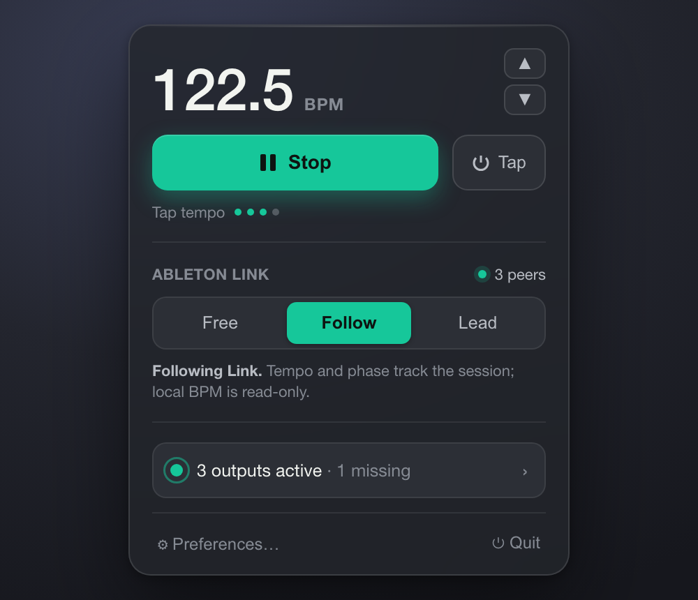

Get Synclock
A signed, notarized build for macOS 13 and later. Free, forever.
If it earns a spot in your setup, you can buy me a coffee.
Synclock is a tiny macOS menubar app that locks all your MIDI hardware to one tight clock, and to Ableton Link, without booting a heavy DAW.

Most ways to clock hardware mean opening a full DAW, fighting plugin latency, or buying a dedicated box. Synclock lives in the menu bar and does one thing exceptionally well: it keeps everything in time.
Three moves from the menu bar.
Decimal BPM, fine nudge, and tap tempo. Synclock is the heartbeat of the rig.
Every MIDI output is discovered automatically. Pick what syncs, nickname it, and dial in a per-device delay. New gear stays off until you say so.
Send Start/Stop to your hardware, or follow an Ableton Link session so your laptops and apps share the same beat.
A hand-owned, high-priority scheduler emits timestamped CoreMIDI so the operating system delivers each pulse precisely. We measure it, and report honest numbers.
Grooveboxes, synths, drum machines, interfaces — auto-discovered, with per-device enable, sync delay, and clock-vs-transport control.
Lead the session, follow it, or ignore it. The active mode is always visible.
No account, no subscription, no telemetry. GPLv2 — the source is yours to read and build.
A signed, notarized build for macOS 13 and later. Free, forever.
If it earns a spot in your setup, you can buy me a coffee.